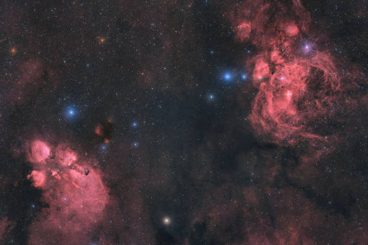

Notable Stars:
Sirius (Alpha Canis Majoris)

- Distance from Earth: Approximately 8.6 light-years
- Type: Binary star system (Sirius A and Sirius B)
- Key Features: Sirius is the brightest star in the night sky and is part of the Canis Major constellation. It has a mass about twice that of the Sun and is 25 times more luminous. Historically, it has been significant in various cultures and was associated with the "Dog Days" of summer in ancient Greece.
- Fun Fact: The name "Sirius" comes from the Greek word for "glowing" or "scorching," reflecting its brightness!
Betelgeuse (Alpha Orionis)

- Distance from Earth: Approximately 642 light-years
- Type: Red supergiant
- Key Features: Betelgeuse is one of the largest stars visible to the naked eye and is located in the Orion constellation. It has a diameter approximately 1,000 times that of the Sun and is nearing the end of its life cycle, with a predicted supernova event that could occur in the next million years.
- Fun Fact: If Betelgeuse were placed at the center of our solar system, its outer surface would extend past the orbit of Jupiter!
Polaris (Alpha Ursae Minoris)

- Distance from Earth: Approximately 433 light-years
- Type: Supergiant
- Key features: Polaris, known as the North Star, is located nearly directly above the North Pole. It is part of the Ursa Minor constellation and serves as a critical navigation point. Its position has made it a key reference for sailors and travelers throughout history.
- Fun Fact: Polaris is not just one star; it's a multiple star system, with at least two companions orbiting it!
Rigel (Beta Orionis)
_content2.jpg)
- Distance from Earth: Approximately 860 light-years
- Type: Blue supergiant
- Key Features: Rigel is the brightest star in the Orion constellation and is notable for its blue color, indicating a high temperature. It is about 120,000 times more luminous than the Sun and plays a significant role in the structure of the constellation.
- Fun Fact: Rigel is also known as "Beta Orionis," but it is actually more luminous than Betelgeuse, despite its lower rank in the constellation!
Proxima Centauri

- Distance form Earth: Approximately 4.24 light-years
- Type: Red dwarf
- Key Features: Proxima Centauri is the closest known star to the Sun and part of the Alpha Centauri star system. Despite its proximity, it is not visible to the naked eye. It has at least one known exoplanet, Proxima Centauri b, located within the habitable zone.
- Fun Fact: Proxima Centauri is so faint that it would take about 4.24 years for light from it to reach us, yet it's still the closest star system!
The Sun

- Distance from Earth: 8.3 light-minutes (our star)
- Type: G-type main-sequence star (G dwarf)
- Key Features: The surface of the Sun, known as the photosphere, has a temperature of about 5,500 degrees Celsius (9,932 degrees Fahrenheit). This high temperature contributes to the intense light and heat that reaches Earth, supporting life.
- Fun Fact: Did you know that the Sun is so large that it accounts for about 99.86% of the total mass of the solar system? This immense mass creates a gravitational pull that keeps all the planets, moons, and other celestial bodies in orbit around it!
Notable Constellations:
Orion

- Description: One of the most prominent and recognizable constellations, representing a hunter in Greek mythology.
- Key Stars: Includes Betelgeuse, Rigel, and Bellatrix.
- Significance: Orion is visible across the world and serves as a guide for finding other constellations. The Orion Nebula, located within this constellation, is a significant site of star formation.
- Fun Fact: The three stars that form Orion's Belt—Alnitak, Alnilam, and Mintaka—are almost perfectly aligned in a straight line!
Ursa Major

- Description: Known as the Great Bear, this constellation is home to the famous Big Dipper asterism.
- Key Stars: Dubhe and Merak form the bowl of the Dipper.
- Significance: Ursa Major has played a crucial role in navigation due to the position of its stars. It is also rich in mythology across various cultures.
- Fun Fact: The Big Dipper is not a constellation itself but part of Ursa Major, which is why some people refer to it as the "Great Bear."
Scorpius
- Description: A prominent constellation in the southern sky, representing a scorpion.
- Key Stars: Antares, a red supergiant star, marks the heart of Scorpius.
- Significance: Scorpius is associated with various myths and legends and is known for its bright stars and clusters, making it a favorite among stargazers.
- Fun Fact: The name "Antares" means "rival of Ares" (the Greek god of war) due to its reddish color, similar to the planet Mars!